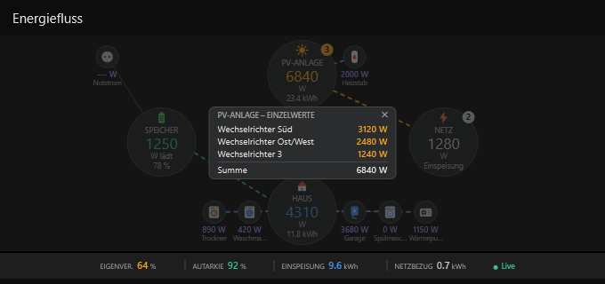

Shows in the Windows QuadClient where the power is flowing right now: PV system, battery, grid and house as circles, plus up to 17 individual loads – wallboxes, washing machine, heat pump and whatever else is metered – each with its own symbol and connection point. Single values can sit behind each circle, for example three inverters behind the PV system.
| CO | Value | Display |
|---|---|---|
| PV power | W | “PV” circle. Above 0: line PV → house. |
| Battery power | W | “Battery” circle, the absolute value is shown. |
| House consumption | W | “House” circle. |
| Grid power | W | “Grid” circle. Positive = feed-in (line PV → grid), negative = import (line grid → house). |
| Battery state of charge | % | In the battery circle. |
| Battery state | 1 / 2 / other | 1 = charging (line house → battery), 2 = discharging (battery → house), otherwise idle. Without this CO there is no line to the battery. |
| PV yield today, consumption today | kWh | In the PV and house circles. |
| Self-consumption, self-sufficiency | % | Footer. |
| Feed-in today, grid import today | kWh | Footer. |
Power values as DPT 9 or DPT 14 in watts. The plugin converts nothing and builds no sums: every value is shown as the HomeServer delivers it.
| Field | Meaning |
|---|---|
| Kind | “Load” for its own small circle, “Single value” for a row behind a main circle (see below). |
| Name | Text below the symbol, about ten characters fit. Empty = default by symbol (Wallbox 1, Washing machine, Load 1 …). |
| Symbol | Wallbox, car, washing machine, dishwasher, dryer, cooker, fridge, heat pump, hot water/heating rod, air conditioning, light, socket, pool, TV, computer, other. |
| Connection point | House (usual), PV system, battery or grid: the line to the load starts there. |
| CO power [W] | Power in watts. 0 = thin line, negative = the dashes run back to the connection point. From 10 kW the display shows kW. |
At most 17 loads with a CO are shown. The arrows ∧ ∨ change the order; it decides who sits closer to the connection point. Ten loads fit in one row at the house; with more there are two rows without names.

A single value is an entry of the kind “Single value”: name, main circle (PV system, battery, grid or house) and the CO of its power in watts. A small disc with the count appears at the circle; a click on the circle shows the list. Eight per circle at most. Without a name they are called “Inverter 1”, “Battery 1”, “Meter 1” or “Area 1”.
The circle itself keeps showing the value of its own CO (e.g. “CO PV power”). The total of the single values is only shown in the panel; the plugin does not write it into the circle. The HomeServer therefore has to supply the total CO.
error.log (lines with “Energiefluss 99-3”).